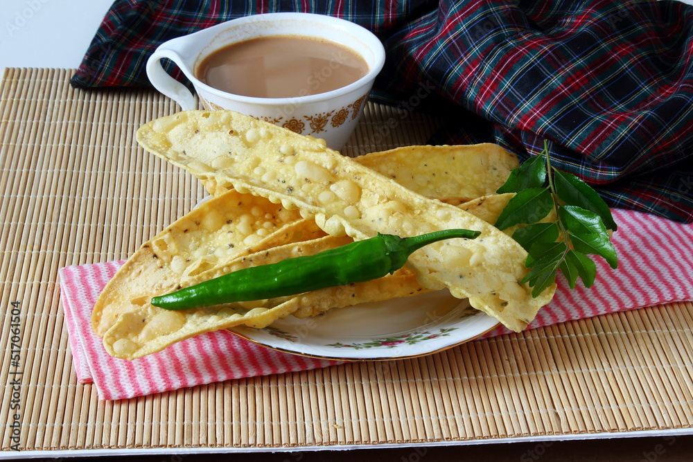
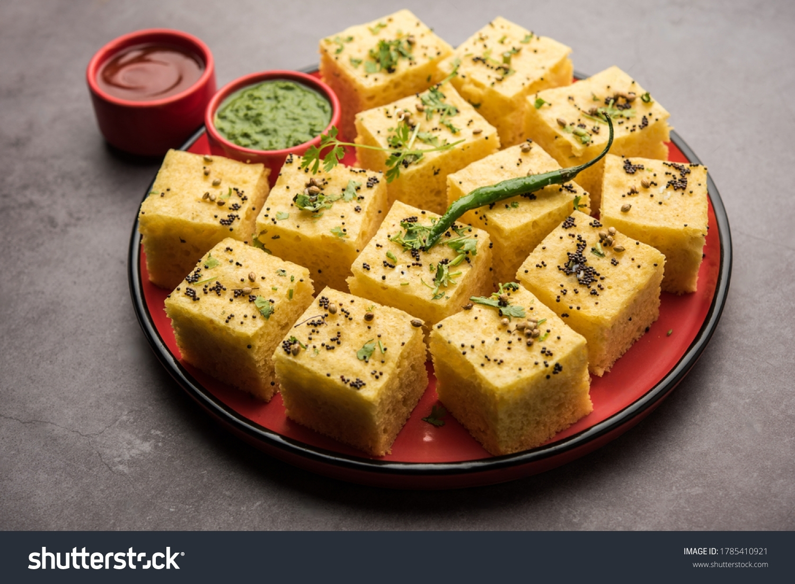

Fafda Gathiya is a popular and beloved snack in Indian cuisine, particularly in the state of Gujarat.
This crunchy, deep-fried delight is often enjoyed during festivals, celebrations, and as a tea-time
accompaniment. The combination of gram flour (besan), spices, and a touch of love results in these
flavorful and addictive treats. Let's explore the step-by-step recipe for making Fafda Gathiya at home.
Ingredients:
2 cups gram flour (besan)
1/4 cup semolina (sooji)
1/2 teaspoon turmeric powder
1/2 teaspoon red chili powder
1/4 teaspoon asafoetida (hing)
Salt to taste
2 tablespoons oil
Water (as needed)
Oil for deep frying
For the tempering (optional):
1 tablespoon mustard seeds
1 tablespoon sesame seeds
1/2 teaspoon asafoetida (hing)
Curry leaves

Instructions:
Prepare the Dough:
In a large mixing bowl, combine gram flour, semolina, turmeric powder, red chili powder,
asafoetida, salt, and 2 tablespoons of oil.
Gradually add water to form a smooth and soft dough. Ensure that the dough is not too sticky.
Cover the dough and let it rest for at least 15-20 minutes.
Divide and Roll:
Divide the dough into small portions and roll each portion into a long, thin strip, resembling a
rope. Aim for uniform thickness to ensure even frying.
Shape the Fafda:
Gently press and flatten each rolled strip to form thin, elongated sheets. You can use a rolling
pin to achieve the desired thickness.
Heat the Oil:
In a deep pan or kadhai, heat sufficient oil for deep frying. To check if the oil is ready, drop
a small piece of dough into the oil; if it rises to the surface and sizzles, the oil is hot
enough.
Fry the Fafda:
Carefully slide the rolled fafda strips into the hot oil, frying a few at a time. Fry until they
turn golden brown and crispy. Use a slotted spoon to remove them from the oil and drain excess
oil by placing them on absorbent paper.
Prepare the Tempering (Optional):
In a separate pan, heat a tablespoon of oil. Add mustard seeds, sesame seeds, asafoetida, and
curry leaves. Allow them to splutter and release their aroma. Pour this tempering over the fried
fafda for added flavor.
Serve and Enjoy:
Fafda Gathiya can be enjoyed on its own or paired with green chutney, tamarind chutney, or a cup
of hot chai. Serve it during festivals, family gatherings, or simply indulge in its crunchy
goodness as a snack.
The Irresistible Spongy Delight: Dhokla Recipe
Introduction:
Dhokla is a steamed, spongy, and flavorful snack originating from the Indian subcontinent. This light and airy delicacy have gained popularity not only in its place of origin but worldwide. Dhokla is a perfect addition to your tea-time menu or a healthy snack option. Let's dive into the step-by-step process of making this delightful Dhokla at home.
Ingredients:
1 cup gram flour (besan)
1/4 cup semolina (sooji)
1 cup yogurt
1/2 teaspoon ginger paste
1/2 teaspoon green chili paste
1/4 teaspoon turmeric powder
1 teaspoon eno fruit salt
Salt to taste
For Tempering:
2 tablespoons oil
1 teaspoon mustard seeds
1 teaspoon sesame seeds
2-3 green chilies, slit
A pinch of asafoetida (hing)
Few curry leaves

Instructions:
Prepare the Batter:
In a mixing bowl, combine gram flour, semolina, yogurt, ginger paste, green chili paste, turmeric powder, and salt. Mix well to form a smooth batter.
Add Eno Fruit Salt:
Just before steaming, add eno fruit salt to the batter and mix gently. You will notice the batter becoming frothy.
Steam the Dhokla:
Pour the batter into a greased steaming dish. Steam for about 15-20 minutes or until a toothpick inserted comes out clean.
Prepare the Tempering:
Heat oil in a pan, add mustard seeds, sesame seeds, green chilies, asafoetida, and curry leaves. Let them splutter and release their flavors.
Apply Tempering:
Pour the tempering over the steamed Dhokla. Ensure that the tempering reaches all parts of the Dhokla for added flavor.
Cut and Serve:
Allow the Dhokla to cool for a few minutes. Cut it into squares or desired shapes. Serve with mint chutney or your favorite dipping sauce.